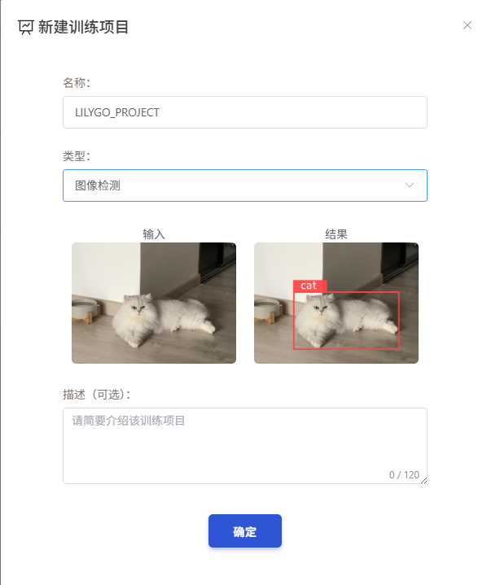
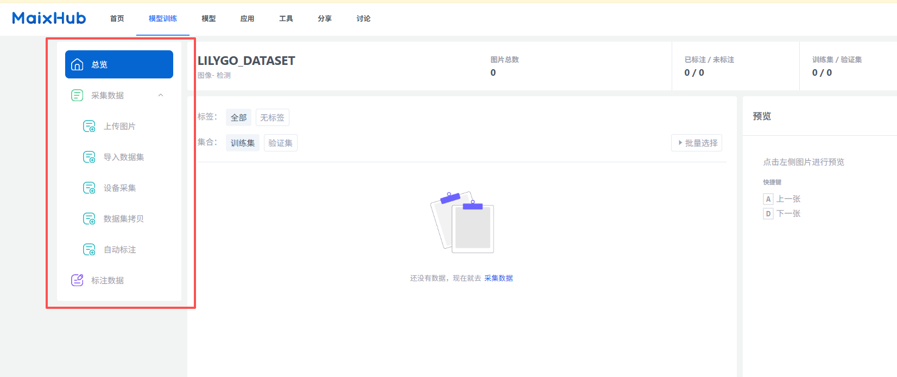

中文 简体
中文 简体LILYGO T-Bao

版本迭代:
| Version | Update date | Update description |
|---|---|---|
| T-Bao_V1.0 | 最新版本 | 基于K210+ESP32的双核AIoT终端初始版本 |
购买链接
| Product | AI Chip | Main MCU | Screen | Camera | Link |
|---|---|---|---|---|---|
| T-Bao | K210 | ESP32-S3 | 1.54" IPS Touch | OV2640 | LILYGO Mall |
目录
描述
T-Bao 是一款基于 ESP32-S3-WROOM-1 和 K210 RISC-V AI 芯片的开源 AIoT 终端，具备高性能、低功耗、可拓展、可编程的特点。深度融合 K210 RISC-V 架构 AI 芯片与 ESP32 双核 Wi-Fi/BLE 通信模组，搭载专业级 OV2640 200 万像素摄像头（支持 180° 旋转调节）及 ST7789V 1.54 英寸 IPS 触控屏（90° 自适应旋转显示），实现毫秒级人脸识别与动态图像处理。
内置 MAX98357A I2S 数字功放、MSM261S 高灵敏度麦克风阵列及硬件编解码单元，支持语音交互与高清音频输出。采用 AXP202 智能电源管理系统，支持 3.7V 锂电池供电与超低功耗运行，集成 MPU6050 六轴传感器、TF 卡存储扩展及丰富接口资源（UART/SPI/I2C/Touch），全面兼容 Arduino/MicroPython 生态。适用于工业视觉检测、智能安防、AIoT 终端及教育机器人等场景。
预览
实物图


引脚图

注意事项
⚠️ SD卡使用注意事项

模块
AI处理器 (K210)
- 芯片：Kendryte K210
- 架构：RISC-V Dual Core 64bit with FPU
- 主频：400MHz（可超频至600MHz）
- 内存：8MB SRAM
- NPU：KPU神经网络处理器
- 特性：支持YOLOv3、Mobilenetv2、TinyYOLOv2、人脸识别等模型
主控制器
- 芯片：ESP32-D0WDQ6-V3
- 核心：Xtensa LX6 Dual Core
- FLASH：16MB
- PSRAM：8MB
- 时钟：240MHz
- 无线：Wi-Fi 802.11 b/g/n, Bluetooth 4.2 + BLE
屏幕
- 尺寸：1.54英寸 IPS
- 分辨率：240x240px
- 屏幕类型：IPS LCD
- 驱动芯片：ST7789V
- 触摸：电容触摸屏
- UI框架：LVGL
摄像头
- 传感器：OV2640
- 像素：200万像素
- 特性：支持180°旋转调节
音频
- 功放：MAX98357A I2S
- 麦克风：MSM261S 高灵敏度麦克风阵列
传感器
- 运动传感器：MPU6050（六轴陀螺仪+加速度计）
- 电源管理：AXP202 PMU
电机驱动
- 芯片：DRV8833
概述
| 组件 | 描述 |
|---|---|
| AI芯片 | K210 RISC-V Dual Core |
| 主MCU | ESP32-D0WDQ6-V3 |
| FLASH | 16MB |
| PSRAM | 8MB |
| 屏幕 | 1.54英寸 ST7789 IPS Touch (240×240) |
| 摄像头 | OV2640 (200万像素) |
| 音频 | MAX98357A + MSM261S麦克风阵列 |
| 传感器 | MPU6050六轴传感器 |
| 电源管理 | AXP202 PMU |
| 电机驱动 | DRV8833 |
| 存储 | TF卡 |
| 无线 | Wi-Fi 802.11b/g/n + Bluetooth 4.2 BLE |
| USB | 1 × TYPE-C接口 |
| 按键 | RST + BOOT + 旋钮 + 4×屏幕按键 |
| 拓展接口 | 2 × QWIIC + 4 × 磁吸接口 |
| 尺寸 | 164×46×42mm |
快速开始
示例应用
| 应用类型 | K210固件 | ESP32固件 | 模型文件 |
|---|---|---|---|
| 方向识别 | maixpy_twatch_v0.6.2-75-g973361c0d-dirty.bin | ESP32_AT_Firmware_UART1_SGPIO.bin | Identify_Direction_model.kmodel |
| 人脸识别 | maixpy_twatch_v0.6.2-75-g973361c0d-dirty.bin | ESP32_AT_Firmware_UART1_SGPIO.bin | face_model_at_0x300000.kfpkg |
| 语音识别 | maixpy_v0.6.2_83_gf0280db50_minimum_speech_with_ide_support.bin | ESP32_AT_Firmware_UART1_SGPIO.bin | maix_asr_2900k_0x500000.kmodel |
K210 固件烧录
- 下载最新固件：MaixPy 固件
- 下载烧录工具：kflash_gui
- 选择对应固件和模型文件进行烧录
注意：语音识别应用需要先将模型文件
maix_asr_2900k_0x500000.kmodel写入地址 0x500000，再烧录固件。
模型训练
使用Maixhub可以训练自己的模型。
Maixhub 提供模型训练功能和模型分享功能， 只需要准备好需要训练的数据集， 不需要搭建训练环境和代码， 上传训练数据即可快速训练出模型，方便快速制作你的 AI 应用，或者入门学习 AI 训练的流程和原理。
另外你也可以在 MaixHub 模型库下载你喜欢的模型，甚至上传分享你自己制作的模型，不管是在 MaixHub 训练的，还是自己写代码训练的各种有意思的模型！
进入Maixhub
1.注册登录好账号之后，进入官网点击模型训练

2.点击新建模型，并且输入名称以及选择模型类型


3.选择数据集，点击上传数据集

在这里你可以选择自己的数据集，也可以选择 Maixhub 已经准备好的数据集，也可以自己上传数据集。

注意：上传数据集时，请确保数据集格式为.zip 文件，并且解压后数据集中包含一个名为
dataset的文件夹，该文件夹中包含训练数据集。
4.选择训练参数，点击开始训练
注意：训练参数的选择需要根据自己的需求进行调整，比如训练轮数、学习率、优化器等。
! ! 部署平台目前K210平台我们示例支持使用的是nncase，训练出的模型文件后缀为.kmodel。

5.等待训练完成，下载模型文件

6.下载完成后，将模型文件上传到 T-Bao 设备中，并将压缩包中的main.py以及.kmodel文件上传到 SD 卡中
这里可以使用MaixPy IDE进行模拟运行，也可以使用MicroPython进行运行。
开发平台
- Arduino IDE - ESP32开发
- MaixPy IDE - K210开发
- ESP-IDF - ESP32高级开发
- MicroPython - 脚本开发
相关测试
测试数据待补充
常见问题
Q. K210 和 ESP32 如何通信？
A. 通过 UART 串口进行通信，K210 作为 AI 处理器，ESP32 作为主控制器和通信模块。Q. 摄像头无法正常工作？
A. 检查摄像头排线连接，确认摄像头模块已正确插入，检查电源供应。Q. 语音识别不准确？
A. 确保在安静环境下使用，检查麦克风是否被遮挡，尝试重新训练模型。Q. 如何延长电池续航？
A. 使用 AXP202 的电源管理功能，在不需要时关闭摄像头和屏幕，启用低功耗模式。Q. SD 卡无法识别？
A. 参考注意事项中的SD卡安装图，确保卡片正确插入且格式为FAT32。
项目
资料
依赖库
- MaixPy - K210 开发框架
- LVGL - 嵌入式图形库
- Arduino_GFX - 图形显示库
- ESP32 Arduino Core - ESP32 Arduino支持
- Adafruit_Sensor - 传感器库